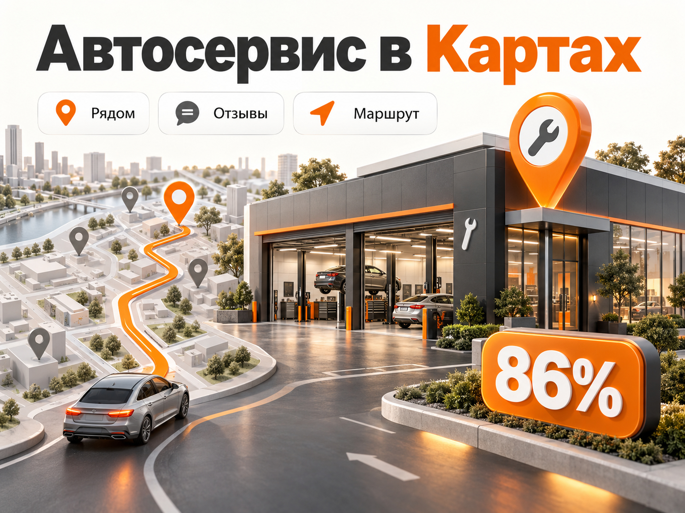
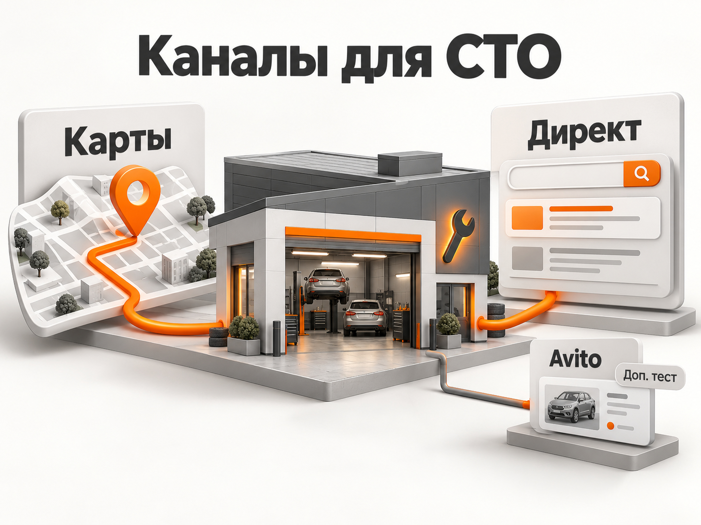
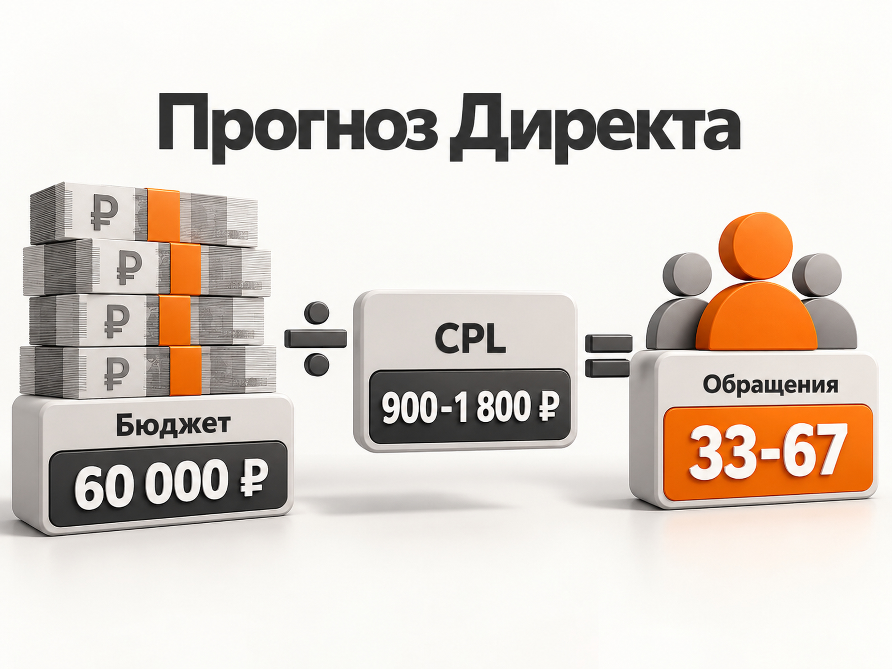

Блог о платном трафике
Продвижение автосервиса и СТО: Яндекс Карты, Директ и прогноз рекламы
Для большинства локальных автосервисов я бы строил продвижение прежде всего вокруг экосистемы Яндекса: Яндекс Бизнес и Карты забирают локальный спрос, а Яндекс Директ позволяет отдельно рекламировать нужные услуги и управлять бюджетом.
Avito тоже имеет смысл тестировать, но как дополнительный канал. Считать там нужно не показы, просмотры и даже не формальные контакты, а реальные звонки, квалифицированные обращения, записи и фактические заезды.
Главная особенность ниши в том, что человеку обычно нужен не просто хороший автосервис. Ему нужен хороший автосервис, до которого он готов ехать. Поэтому география, Карты, отзывы и расстояние здесь влияют на рекламу намного сильнее, чем во многих других услугах.
Почему спрос на автосервисы останется высоким
По итогам 2025 года емкость российского рынка сервисных услуг для легковых автомобилей достигла 1,204 трлн ₽. Из них 719,1 млрд ₽ пришлось непосредственно на техническое обслуживание и ремонт.
При этом конкуренция тоже растет. По исследованию Контур.Фокуса, с августа 2022 по август 2026 года количество организаций в сфере технического обслуживания и ремонта автомобилей выросло с 98 до 123 тысяч, то есть примерно на четверть.
Есть и еще один фундаментальный фактор. На 1 января 2026 года 69% легковых автомобилей в России были старше 10 лет, а к июлю средний возраст легкового автомобиля составлял 15,4 года. Старый парк требует ремонта и обслуживания, поэтому спрос на независимые СТО никуда не исчезает.
Получается хороший рынок с устойчивым спросом, но одновременно с большим количеством конкурентов. Просто открыть автосервис и добавить его на Карты уже недостаточно.
Как человек выбирает автосервис
Условно спрос можно разделить на два типа.
Первый - срочный. Загорелся Check Engine, появился стук в подвеске, проколото колесо, перестал работать кондиционер. Человек вводит «автосервис рядом», «диагностика автомобиля», «ремонт подвески рядом» или сразу открывает Карты.
Здесь особенно важны:
- расстояние;
- рейтинг и отзывы;
- часы работы;
- фотографии;
- понятный перечень услуг;
- цена или хотя бы цена «от»;
- возможность быстро позвонить и записаться.
Второй тип - плановый спрос. Например, замена ГРМ, ремонт АКПП, кузовной ремонт, плановое ТО или обслуживание конкретной марки. Человек может изучить несколько сервисов, перейти на сайты, сравнить цены и отзывы.
Здесь уже сильнее работает связка Яндекс Поиск + сайт + Карты.
Поэтому противопоставлять Яндекс Карты и Яндекс Директ не нужно. Они закрывают разные части одного спроса.
Яндекс Карты должны быть базовым каналом

Для локального автосервиса я бы начинал именно с Яндекс Бизнеса.
Бесплатно нужно создать или подтвердить карточку организации и максимально полно ее заполнить. В карточке должны быть реальные часы работы, телефон, сайт, услуги, цены, фотографии фасада, ремонтных постов, оборудования, мастеров и результатов работ.
Особенно важны отдельные услуги. Не только общее «ремонт автомобилей», но и «замена масла», «ремонт подвески», «диагностика двигателя», «ремонт АКПП», «развал-схождение», «заправка кондиционера».
Чем конкретнее информация, тем проще Яндексу сопоставить карточку с запросом пользователя.
Платное продвижение усиливает эту базу. Яндекс сообщает, что первые десять организаций в поиске Карт получают до 86% переходов. Для Приоритетного размещения Яндекс также приводит свой усредненный показатель: количество построенных маршрутов после подключения увеличивается на 39%.
Важно понимать, что купить гарантированное первое место нельзя. На показ влияют релевантность запросу, расстояние до пользователя, рейтинг и отзывы, содержание карточки, ставка или бюджет и вероятность целевого действия.
Поэтому платное размещение слабой карточки - плохая стратегия. Сначала нужно подготовить сам профиль, затем покупать дополнительную видимость.
Что владельцы называют премиум-размещением
У Яндекса сейчас несколько механизмов продвижения организаций: Рекламная подписка, Приоритетное размещение, Брендированное приоритетное размещение и продвижение организаций через Яндекс Директ.
При этом официальное Приоритетное размещение доступно сетям. Для одиночной организации Яндекс предлагает другие варианты, в частности Рекламную подписку и Брендированное приоритетное размещение.
Стоимость зависит от рубрики, расположения, конкурентов и других факторов. Поэтому универсальной цены «премиума для автосервиса» не существует.
На отдельной странице для автосервисов Яндекс предлагает начинать Рекламную подписку примерно от 5 000 ₽ в месяц. Но это именно стартовый ориентир самой платформы, а не гарантия достаточного бюджета для конкурентного района.
Для практического прогноза я бы не рассчитывал, что 5 000 ₽ автоматически обеспечат заметный дополнительный поток в городе-миллионнике.
Сколько закладывать на Яндекс Карты
Для небольшого или среднего автосервиса я бы первоначально закладывал на платное усиление Карт примерно 15 000-30 000 ₽ в месяц.
Это не среднерыночная цена и не тариф Яндекса. Это рабочий бюджет для теста, который затем нужно корректировать по конкретному городу и уровню конкуренции.
Считать результат нужно не по количеству показов карточки. Основные показатели:
звонок -> запись -> фактический заезд -> выручка.
Дополнительно полезно смотреть маршруты, переходы на сайт и сообщения, но не смешивать их с реальными обращениями.
В опубликованном кейсе большого московского автосервиса за январь-март 2026 года Яндекс Карты дали 277 лидов при расходе 32 066 ₽, то есть автор кейса получил расчетный CPL около 115 ₽. За тот же период Яндекс Директ дал 285 лидов при расходе 910 474 ₽, CPL составил 3 194 ₽. Это показатели одного конкретного проекта, а не норма рынка, но разница хорошо показывает потенциал локального спроса в Картах.
В другом свежем агентском примере автотехцентр во Владимире на стабильной стадии продвижения получал 230 звонков и 140 построенных маршрутов в месяц из карточки. Московский технический центр получал около 150 звонков, а центр кузовного ремонта в Санкт-Петербурге - 135 звонков и 124 маршрута. Бюджеты в этих примерах не раскрыты, поэтому пересчитать стоимость клиента невозможно.
Главный вывод из таких кейсов не в том, что «лид из Карт стоит 115 ₽». Вывод в другом: игнорировать Карты при продвижении СТО нельзя.
Яндекс Директ нужен для управления спросом

Карты хорошо ловят запрос «где починить машину рядом».
Директ решает другую задачу. Через него можно целенаправленно покупать спрос по нужным сервису направлениям:
- «ремонт АКПП»;
- «замена ГРМ»;
- «ремонт подвески»;
- «диагностика двигателя»;
- «ремонт BMW»;
- «ремонт китайских автомобилей»;
- «заправка кондиционера»;
- «кузовной ремонт».
Это позволяет направлять деньги туда, где есть свободные посты и нормальная экономика.
Например, нет смысла активно рекламировать замену масла, если все мастера загружены, зато простаивает кузовной цех.
Как я бы строил Директ для СТО
Основой стал бы поисковый спрос.
Я бы разделил услуги на логичные направления, но не создавал десятки микрокампаний без статистики. Например, отдельно можно рассматривать слесарный ремонт, АКПП, кузовной ремонт, шиномонтаж и сезонные услуги.
Внутри уже группировать более конкретные запросы.
Для локального автосервиса особенно важна география. В Директе можно задавать точки и радиус от 0,5 до 10 км, а также выбирать пользователей, которые живут, работают или регулярно бывают в нужной зоне.
Радиус нужно выбирать не по принципу «чем больше, тем лучше», а по реальной готовности клиента ехать.
На замену масла человек вряд ли поедет через весь город.
К хорошему специалисту по сложному ремонту АКПП или определенной марке машины могут приехать значительно дальше.
Именно поэтому география должна различаться по услугам.
Не ведите весь трафик на главную
Одна из самых частых проблем рекламы СТО - запрос конкретный, а посадочная страница общая.
Человек ищет:
- «ремонт АКПП Kia».
А попадает на страницу:
- «Автосервис полного цикла. Ремонтируем все автомобили».
Ему приходится самостоятельно искать, ремонтируете ли вы его коробку, сколько это примерно стоит и есть ли опыт с его автомобилем.
Лучше делать отдельные страницы хотя бы для основных коммерческих направлений.
На странице должны быстро отвечать на четыре вопроса:
- что ремонтируете;
- с какими автомобилями работаете;
- примерная стоимость;
- как быстро можно приехать.
Дополнительно нужны фотографии сервиса, оборудование, гарантия, отзывы и понятная запись.
Какие CPL встречаются сейчас
Одного надежного среднего CPL для автосервисов нет.
Например, в уже упомянутом московском кейсе января-марта 2026 года Яндекс Директ дал CPL 3 194 ₽.
В другом проекте по установке и обслуживанию ГБО в городе-миллионнике в сентябре 2025 года зафиксировали 61 конверсию по 602 ₽, в октябре - 57 по 492 ₽, в декабре - 133 по 329 ₽. Но в качестве конверсий там учитывались отправка формы, клик по телефону и переход в мессенджер. Поэтому сравнивать эти значения с полноценным квалифицированным лидом напрямую нельзя.
На моем сайте также есть старый кейс двух автосервисов в Рыбинске: за январь-июнь 2020 года было получено 533 заявки при расходе 112 044 ₽, около 210 ₽ за заявку. Но использовать цену 2020 года как прогноз на 2026 год нельзя. Этот кейс сегодня полезен скорее как пример работы с узкой семантикой, географией и отдельными направлениями услуг.
Рабочий прогноз стоимости заявки

Для предварительного расчета на 2026 год я бы закладывал более осторожный диапазон.
Для обычного автосервиса без уникальной специализации:
| География | Рабочий CPL для первого прогноза |
|---|---|
| город 200-500 тыс. жителей | 600-1 200 ₽ |
| город-миллионник | 900-1 800 ₽ |
| Москва и Санкт-Петербург | 1 500-3 200 ₽ |
Это мой расчетный рабочий диапазон на основе свежих опубликованных кейсов, а не средняя цена по рынку.
Для кузовного ремонта, АКПП, двигателя и других дорогих направлений CPL может быть выше. Для шиномонтажа, простых сезонных услуг и небольших городов - ниже.
После первого месяца этот прогноз нужно заменить фактическими данными конкретного сервиса.
Что даст рекламный бюджет 60 000 ₽
Возьмем региональный город-миллионник и расчетный CPL 900-1 800 ₽.
60 000 / 1 800 = примерно 33 обращения.
60 000 / 900 = примерно 67 обращений.
Получаем прогноз порядка 33-67 обращений из Яндекс Директа за месяц.
Но это еще не 33-67 клиентов.
Часть людей позвонит узнать цену и пропадет. Кто-то запишется и не приедет. Кто-то окажется нецелевым. Поэтому следующий обязательный показатель - стоимость фактического нового клиента.
Допустим, сервис готов платить максимум 4 000 ₽ за первый оплаченный заезд, а из квалифицированных лидов приезжает 25%.
Допустимый CPL:
4 000 × 25% = 1 000 ₽.
Если реклама дает квалифицированный лид по 800 ₽ - экономика потенциально проходит.
Если по 2 000 ₽ - при тех же вводных уже нет.
Именно так нужно определять допустимый CPL, а не искать в интернете «нормальную цену заявки на автосервис».
Не оценивайте рекламу только по первому чеку
Автосервис отличается от многих услуг повторными обращениями.
Человек может первый раз приехать на диагностику или замену масла, а позже вернуться на ремонт подвески, тормозов, ТО и другие работы.
В московском кейсе 2026 года средний чек сервиса за 2025 год составлял 12 724 ₽, но автор отдельно указывает, что экономика клиента оценивалась с учетом нескольких последующих посещений, а не только первого заезда.
Поэтому нормальная аналитика должна доходить минимум до фактического заезда, а лучше до выручки клиента за несколько месяцев.
Без коллтрекинга нормальной аналитики не будет
Для СТО это особенно важно, потому что большая часть клиентов предпочитает звонить.
Клик по номеру телефона - не звонок.
Построенный маршрут - не клиент.
Сообщение - не заезд.
Поэтому я бы обязательно связал:
- Яндекс Метрику;
- коллтрекинг;
- CRM или хотя бы систему учета записей;
- источник обращения;
- стоимость ремонта;
- факт приезда.
В самом Яндекс Директе можно подключать организацию из Яндекс Бизнеса и учитывать действия с карточкой, включая звонки, маршруты и переходы в мессенджеры. Также доступен коллтрекинг.
Но конечную оценку рекламы все равно лучше делать по бизнес-результату.
Нужна ли РСЯ
Я бы не делал РСЯ главным каналом на старте небольшого автосервиса.
Сначала нужно забрать сформированный спрос:
- Яндекс Карты;
- поиск Яндекса.
После этого можно тестировать РСЯ, ретаргетинг и аудитории.
Особенно если прямого поискового спроса уже не хватает или нужно продвигать сезонную услугу.
При небольшом количестве конверсий не стоит одновременно создавать много кампаний и пытаться оптимизировать каждую под отдельную редкую цель. Алгоритмам просто не хватит данных.
Что делать с Avito
Avito для автосервисов точно нельзя списывать со счетов.
Например, в опубликованном кейсе московского автосервиса с 5 марта по 18 мая 2026 года получили 814 контактов при расходе 107 858 ₽, то есть около 132,5 ₽ за контакт.
Но контакт на Avito нельзя автоматически считать качественным лидом и тем более клиентом.
Кроме того, распределение трафика внутри площадки очень неравномерное. В исследовании выдачи автосервисов в 15 городах-миллионниках в августе 2026 года 37% объявлений вообще не получили просмотров за сутки, а у 64% было не более двух просмотров. При этом небольшая доля объявлений концентрировала значительную часть внимания.
По моему опыту, результаты Avito Ads в этой нише также могут быть заметно менее стабильными, чем хотелось бы: статистика показывает большой объем просмотров или переходов, а реальных обращений недостаточно.
Это не основание утверждать, что площадка что-то «рисует». Но и ориентироваться на внутренние показатели Avito без проверки звонков, записей и заездов я бы не стал.
Поэтому роль Avito для СТО вижу именно как дополнительный тест после Яндекса.
Как распределить бюджет до 100 000 ₽
Если рекламный бюджет ограничен, я бы не размазывал его между пятью каналами.
При бюджете 40 000 ₽:
- 15 000 ₽ - Яндекс Карты и Яндекс Бизнес;
- 25 000 ₽ - Яндекс Директ.
При бюджете 60 000 ₽:
- 20 000 ₽ - Карты;
- 40 000 ₽ - Директ.
При бюджете 100 000 ₽:
- 25 000-35 000 ₽ - Карты;
- 55 000-65 000 ₽ - Директ;
до 10 000-20 000 ₽ - дополнительные тесты РСЯ или Avito, если основные каналы уже дают понятную экономику.
Это стартовая схема, а не постоянная пропорция.
Если Карты дают клиентов дешевле и есть возможность масштабироваться - увеличиваем их долю.
Если карточка уже упирается в объем локального спроса, а Директ стабильно дает прибыльные заезды - деньги переносим туда.
Какие услуги лучше рекламировать в первую очередь
Не обязательно рекламировать весь прайс.
Сначала я бы выписал все услуги в таблицу и добавил к каждой:
- средний чек;
- маржу;
- частоту повторных обращений;
- загрузку постов;
- примерный объем спроса;
- стоимость рекламы.
Затем выбрал несколько направлений с хорошей экономикой.
Условная замена лампочки может дать много дешевых лидов, но не заработать денег.
Ремонт АКПП может давать более дорогой CPL, но один клиент приносит намного больше прибыли.
Поэтому рекламный бюджет должен распределяться не по количеству заявок, а по конечной экономике услуги.
Сезонность нужно учитывать заранее
У автосервисов есть услуги с выраженной сезонностью.
Весной и осенью резко растет спрос на шиномонтаж.
Перед летом увеличивается интерес к диагностике и заправке кондиционеров.
Перед поездками и отпусками растет спрос на ТО и диагностику.
Зимой могут меняться обращения по аккумуляторам, электрике, отоплению и запуску двигателя.
Бюджет лучше усиливать до пика спроса, а не после того, как конкуренты уже подняли ставки.
Пошаговая схема запуска
До рекламы:
- Подтвердить и полностью заполнить карточку Яндекс Бизнеса.
- Добавить услуги, цены, реальные фотографии и актуальные часы работы.
- Привести в порядок отзывы и ответы на них.
- Подключить Метрику и коллтрекинг.
- Разделить услуги по чеку, марже и спросу.
- Подготовить отдельные страницы хотя бы под основные направления.
После этого:
- Запустить продвижение в Картах.
- Запустить поисковый Директ на наиболее выгодные услуги.
- Ограничить географию реальной зоной обслуживания.
- Еженедельно проверять реальные поисковые запросы и качество обращений.
- Передавать в аналитику не только заявки, но и квалификацию, записи и фактические заезды.
- Только после появления стабильной статистики подключать дополнительные каналы и расширять охват.
Какой результат считать хорошим
Не нужно ставить единственную цель вроде «получать заявки дешевле 1 000 ₽».
Нормальная конечная воронка для автосервиса выглядит так:
рекламный расход -> обращение -> квалифицированное обращение -> запись -> фактический заезд -> выручка -> повторные визиты.
Если реклама дает дорогие заявки, но они приезжают и оставляют деньги, такой канал может быть намного полезнее источника дешевых контактов, которые никуда не доезжают.
Именно поэтому у автосервиса особенно опасно оптимизироваться только по CPL.
Итог
В 2026 году для большинства автосервисов и СТО основной рекламной связкой я бы считал Яндекс Карты + Яндекс Директ.
Карты закрывают сильный локальный спрос и помогают забрать клиента в момент выбора ближайшего сервиса.
Директ позволяет управлять спросом по конкретным услугам, географии и загрузке сервиса.
Для регионального СТО с ограниченным бюджетом разумная стартовая точка - примерно 40 000-100 000 ₽ рекламного бюджета в месяц, причем основную часть я бы оставлял внутри экосистемы Яндекса.
Avito можно подключать дополнительным тестом, но оценивать его только по реальным обращениям и заездам.
А главный показатель рекламы автосервиса - не количество кликов и даже не цена заявки. Главное - сколько стоит новый клиент, который действительно приехал в сервис и сколько денег он принес за первый и последующие визиты.